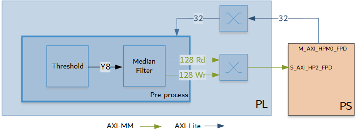
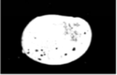
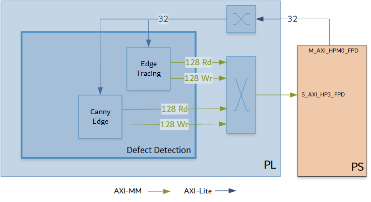
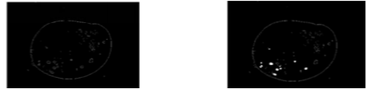

Kria™ KV260 Vision AI Starter Kit Defect Detection Tutorial |
Hardware Architecture of the Accelerator |
Hardware Architecture of the Accelerator¶
The Vitis overlay includes the Pre-Process block and the Defect Detection blocks.
Pre-Process¶
The Pre-Process pipeline reads a video frame from memory, processes it as required for the Defect Detection function, and writes it back to memory. The Pre-Process pipeline is as follows:

This pipeline consists of two Vitis Vision functions whose parameters can be configured via AXI-Lite based register interface.
The grey-scale image from the capture pipeline should be converted to a binary image with a specific threshold value. The Threshold function in the Vitis Vision library is used to perform this operation and yields an image that has a black background and a mango area that is white.
The Median Blur filter acts as a non-linear digital filter that improves noise reduction. A filter size of N would output the median value of the NxN neighborhood pixel values, for each pixel. In this design, N is set to 3.
An example output image after passing through the Pre-Process pipeline is as follows:

Note: This proprietary image is from COFILAB.
Defect Detection¶
The block in the Defect Detection pipeline reads a video frame from memory, processes it, and writes it back to memory. The Defect Detection pipeline is as follows:

The Canny edge detector finds the edges in the video frame. In this algorithm, the noise in the image is reduced first by applying a Gaussian mask. The Gaussian mask used here is the average mask of size 3x3. Thereafter, gradients along x and y directions are computed using the Sobel gradient function. The gradients are used to compute the magnitude and phase of the pixels. The phase is quantized, and the pixels are binned accordingly. Non-maximal suppression is applied on the pixels to remove the weaker edges.
Edge Tracing is applied on the remaining pixels to draw the edges on the image. The Contour Filling function, which is the final function required to detect defects in the mango, is done in the PS.
Example output images after Edge Tracing and Contour Filling is done, is as follows:

Note: This proprietary image is from COFILAB.
Resource Utilization¶
Vitis integrates the pre-processing function and Defect detection function into the platform. The table below shows utilization numbers post implementation.
| K26 | CLB LUTs | BRAM | DSP | URAM |
|---|---|---|---|---|
| Available | 117120 | 144 | 1248 | 64 |
| Platform | 22893 | 18 | 35 | 1 |
| Pre-processing | 5244 | 3.5 | 9 | 0 |
| Canny Edge | 6773 | 8.5 | 11 | 1 |
| Edge Tracing | 7114 | 3 | 9 | 5 |
| Other* | 6189 | 21 | 0 | 0 |
| Total | 48181 | 54 | 64 | 7 |
| Total % | 41.14% | 37.50% | 5.13% | 10.94% |
Other* : AXI interconnects and Interrupt concat block added by Vitis
Next Steps¶
Go back to the KV260 SOM Defect detect design start page
References¶
https://github.com/Xilinx/Vitis_Libraries/tree/master/vision
https://xilinx.github.io/Vitis_Libraries/vision/2020.2/index.html
License¶
Licensed under the Apache License, Version 2.0 (the “License”); you may not use this file except in compliance with the License.
You may obtain a copy of the License at http://www.apache.org/licenses/LICENSE-2.0
Unless required by applicable law or agreed to in writing, software distributed under the License is distributed on an “AS IS” BASIS, WITHOUT WARRANTIES OR CONDITIONS OF ANY KIND, either express or implied. See the License for the specific language governing permissions and limitations under the License.
Copyright© 2021 Xilinx